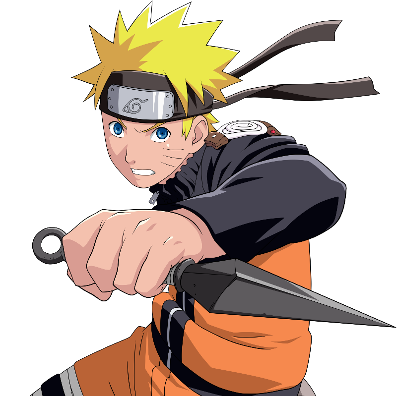

Наруто Узумаки (яп. うずまきナルト, Узумаки Наруто) — шиноби Деревни Скрытого Листа. Главный персонаж вселенной. В день своего рождения он стал джинчуурики Девятихвостого Демона-Лиса — судьба, из-за которой он стал изгоем для большей части людей в Конохе на протяжении всего своего детства. После присоединения к команде Какаши, Наруто упорно трудился, чтобы получить признание всех в деревне и исполнить свою заветную мечту стать Хокаге. В последующие годы, благодаря многим трудностям и испытаниям, он стал способным ниндзя, которого считали героем Конохагакуре, и после во всем мире, он стал известен как Герой Скрытого Листа (яп. 木 ノ 葉 隠 れ の 英雄, Конохагакуре но Эйю). Вскоре, он оказался одним из ключевых факторов победы в Четвертой Мировой Войне Шиноби, что в конце-концов привело его к достижению своей мечты, когда он стал Седьмым Хокаге (яп. 七 代 目 火影; Буквальное значение: Тень Огня Седьмого Поколения).